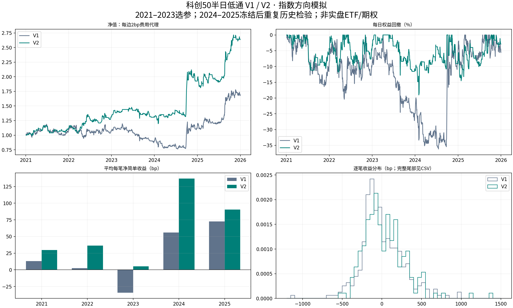

首要目标：平均每笔净收益。固定1分钟、半日低通、五窗并集、多空镜像。2021—2023的324组有界参数研究后冻结V2；2024—2025只检验，不再排名或改参。全部历史已消费，非新鲜样本。
账户：指数方向模拟，下一根原始开盘价、单笔固定入场份额、年度账户隔离并顺次复投。费用是每边bp代理，非ETF/期权真实成交。CAGR / MDD / win_rate以百分数展示，mean_net_bp以bp展示。净值图回撤为每日口径，下表全期MDD为逐分钟。
V2参数：e0.001_x0.05_p2_w480_c1_d5。结果前白皮书 · 开发结果后选择规则修订。原AI自加的每年100笔硬门在开发后撤销，此修订已在2024读取前冻结；不是全程纯预注册。
2021年1分钟K线与V2交易 · 2022年1分钟K线与V2交易 · 2023年1分钟K线与V2交易 · 2024年1分钟K线与V2交易 · 2025年1分钟K线与V2交易

| label | fee_bps | trades | mean_net_bp | median_net_bp | sharpe | cagr | mdd | win_rate | mean_bars |
|---|---|---|---|---|---|---|---|---|---|
| V1 | 0.0 | 316 | 27.2717 | -36.0663 | 0.6370 | 14.3403 | 36.8694 | 42.7215 | 661.4715 |
| V1 | 2.0 | 316 | 23.2636 | -40.0583 | 0.5369 | 11.3751 | 38.1436 | 42.7215 | 661.4715 |
| V1 | 4.0 | 316 | 19.2571 | -44.0488 | 0.4374 | 8.4867 | 41.6194 | 42.7215 | 661.4715 |
| V1 | 7.0 | 316 | 13.2504 | -50.0315 | 0.2894 | 4.2940 | 48.0953 | 42.0886 | 661.4715 |
| V2 | 0.0 | 189 | 63.3362 | 2.4599 | 1.1267 | 24.2689 | 19.9932 | 50.2646 | 645.7037 |
| V2 | 2.0 | 189 | 59.3156 | -1.5393 | 1.0512 | 22.3323 | 20.8858 | 49.2063 | 645.7037 |
| V2 | 4.0 | 189 | 55.2965 | -5.5369 | 0.9759 | 20.4258 | 21.7684 | 49.2063 | 645.7037 |
| V2 | 7.0 | 189 | 49.2709 | -11.5303 | 0.8634 | 17.6217 | 23.0738 | 48.1481 | 645.7037 |
| year | label | trades | mean_net_bp | sharpe | return | mdd |
|---|---|---|---|---|---|---|
| 2021 | V1 | 71 | 13.1207 | 0.5283 | 8.2692 | 17.9579 |
| 2022 | V1 | 75 | 2.3945 | 0.0692 | -1.2474 | 21.5751 |
| 2023 | V1 | 47 | -34.3575 | -0.8408 | -15.9434 | 28.4931 |
| 2024 | V1 | 64 | 55.9363 | 0.8369 | 27.7813 | 22.4067 |
| 2025 | V1 | 59 | 72.4579 | 1.6986 | 46.1960 | 11.6820 |
| 2021 | V2 | 41 | 29.6651 | 0.8875 | 12.1267 | 11.7833 |
| 2022 | V2 | 47 | 36.4753 | 0.9713 | 16.8172 | 13.9431 |
| 2023 | V2 | 29 | 5.1132 | 0.1276 | 0.7597 | 14.1570 |
| 2024 | V2 | 35 | 136.8626 | 1.3552 | 45.9531 | 13.4190 |
| 2025 | V2 | 37 | 90.3125 | 1.6755 | 36.8719 | 10.1846 |
| parameter | from | to | pairs | median_delta_mean_net_bp | positive_share | median_delta_sharpe | median_delta_trades |
|---|---|---|---|---|---|---|---|
| entry_alpha | 0.001 | 0.01 | 324 | -2.3482 | 0.4383 | -0.0946 | 32.0 |
| entry_alpha | 0.010 | 0.05 | 324 | 0.8015 | 0.5216 | 0.0514 | 35.0 |
| exit_alpha | 0.050 | 0.15 | 324 | -1.8420 | 0.4321 | -0.0691 | 10.0 |
| exit_alpha | 0.150 | 0.30 | 324 | 1.4592 | 0.5802 | 0.0758 | 5.0 |
| weight_power | 0.000 | 1.00 | 324 | -3.0607 | 0.4074 | -0.1232 | 0.0 |
| weight_power | 1.000 | 2.00 | 324 | 3.1771 | 0.6327 | 0.1332 | 4.0 |
| volatility_window | 120.000 | 240.00 | 324 | 2.0941 | 0.5494 | 0.1247 | -7.0 |
| volatility_window | 240.000 | 480.00 | 324 | 0.1937 | 0.5093 | 0.0114 | -1.0 |
| entry_confirm | 1.000 | 3.00 | 486 | 3.1841 | 0.6502 | 0.1669 | -8.0 |
| cooldown | 0.000 | 5.00 | 486 | 0.1984 | 0.5247 | 0.0070 | -4.0 |